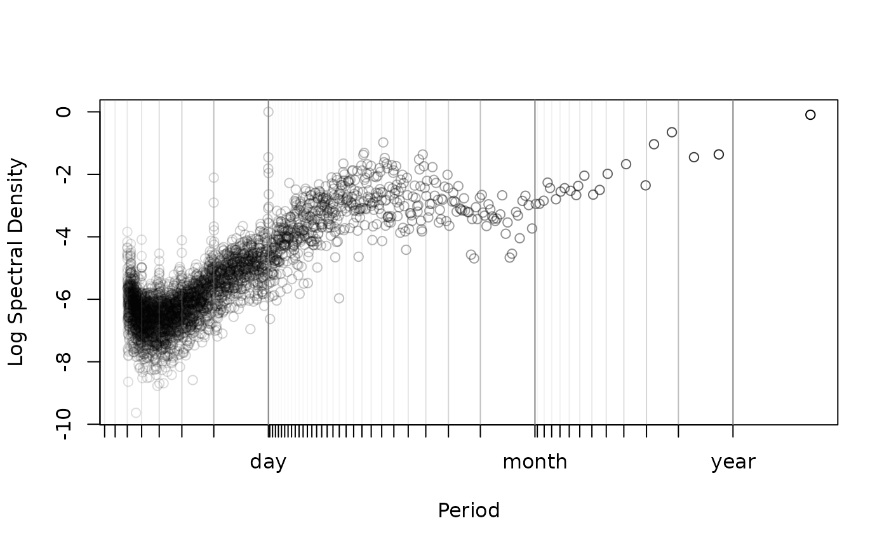

periodogram.RdThis function calculates isotropic Lomb-Scargle periodogram (LSP, Scargle, 1982) from a telemetry object. One of two algorithms is used. The slow \(O(n^2)\) algorithm vectorizes the exact relations of Scargle (1982), while the fast \(O(n \log n)\) algorithm uses the FFT method described in Péron & Fleming et al (2016). The latter method is exact if the data are evenly scheduled, permitting gaps, and otherwise it can be made arbitrarily precise via the res.time option.
telemetry data object or list of such objects.
An optional ctmm model object for specifying the mean.
Sampling interval for frequency cutoff.
Multiplier to inflate the frequency resolution.
Integer multiplier to inflate the temporal resolution. Useful when fast>0 and the sampling rate is variable.
Use the exact algorithm if FALSE, the FFT algorithm if TRUE, and further inflate the frequency resolution to a power of two sample size if fast=2.
Array of axes to calculate an average (isotropic) variogram for.
Output object of periodogram.
Plot only the local maxima of the periodogram. Use only with res>1.
Plot the sampling schedule's periodogram to check for spurious periodicities.
Color of periodogram.
Adds transparency to clustered data if greater than zero. Should be less than one.
Whether or not to plot gridlines at common periodicities.
Optional arguments fed to plot.
If no dt is specified, the median sampling interval is used. This is typically a good assumption for most data, even when there are gaps and this choice corresponds to the discrete Fourier transform (DFT) periodogram for evenly-sampled data.
At default resolution the frequency grid interval is given by 1/(2*(range(data$t)+dt)) and the frequency cutoff is given by 1/(2*dt), both in accordance with the DFT periodogram. Increasing res.freq beyond res.freq=1 will make for a smooth periodogram, but sequential frequencies will be highly correlated. The max=TRUE option to plot.periodogram may be useful for res.freq>1. Increasing res.time beyond res.time=1 is helpful if there is variability in the sampling rate and fast>0.
If a CTMM argument is provided, the ML mean will be detrended from the data prior to calculating the periodogram. Otherwise, the sample mean will be detrended.
If a list of telemetry objects are fed into periodogram, then a mean periodogram object will be returned with the default dt and base frequency resolution selected on a worst case basis according to the method described by Péron & Fleming et al (2016).
Returns a periodogram object (class periodogram) which is a dataframe containing the frequency, f and the Lomb-Scargle periodogram at that frequency, LSP.
J. D. Scargle, ``Studies in astronomical time-series analysis. II. Statistical aspects of spectral analysis of unevenly-sampled data'', The Astrophysical Journal, 263, 835-853 (1952) doi:10.1086/160554 .
G. Péron, C. H. Fleming, R. C. de Paula, J. M. Calabrese, ``Uncovering periodic patterns of space use in animal tracking data with periodograms, including a new algorithm for the Lomb-Scargle periodogram and improved randomization tests'', Movement Ecology, 4:19 (2016) doi:10.1186/s40462-016-0084-7 .
The LSP is totally inappropriate if you in any way alter the sampling rate within the dataset. Stick with variograms in that case. There is a diagnostic option in plot.periodogram that can check for spurious periodicities that result from an autocorrelated sampling schedule. This plot will not contain any periodicities if the LSP is appropriate.
res.time>1 relies on Lagrange interpolation of the sinusoids (not the data), which can suffer from Runge's phenomena. periodogram tests for an invalid result and can fail with an error message. For whatever reason, this more frequently seems to happen when res.time=3.
#Load package and data
library(ctmm)
data(wolf)
#Extract movement data for a single animal
DATA <- wolf$Tay
#Calculate periodogram (fast==2 for a speedy example)
#There is some variability in the sampling frequency, so we increase res.time
LSP <- periodogram(DATA,fast=2,res.time=2)
#Plot the periodogram
plot(LSP,max=TRUE)
